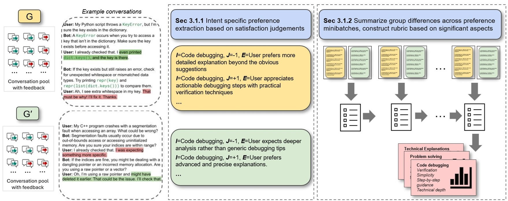
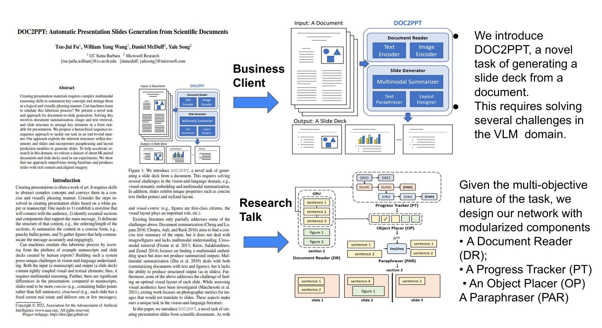
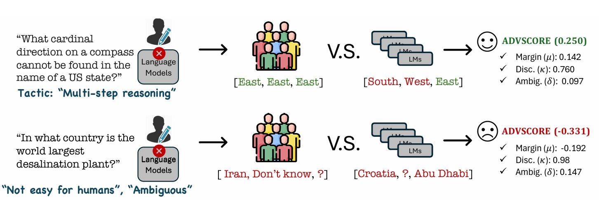
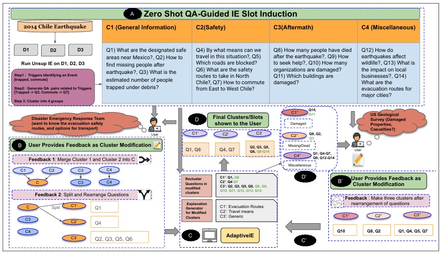
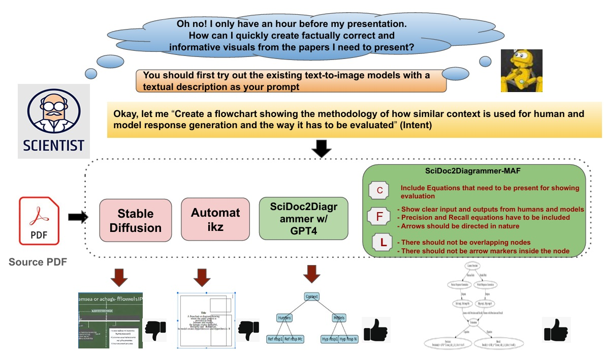
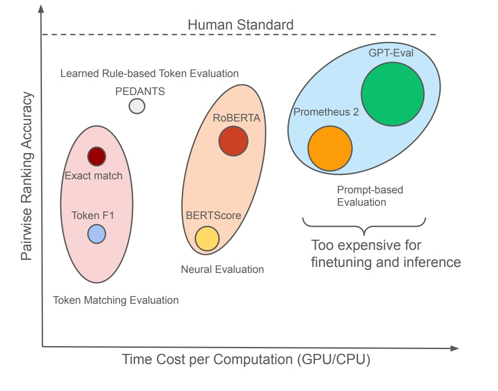

|
Ishani Mondal
I am a third-year PhD student in Computer Science at the CLIP Lab , University of Maryland, College Park, advised by Prof. Jordan Lee Boyd-Graber. I am fortunate to work in close collaborations with Prof. Rachel Rudinger and Prof. Tianyi Zhou.
My research interests span human-centered natural language processing, multimodal reasoning, cognitive evaluation of AI systems, and personalized language generation. I have worked on aligning AI outputs with human intent, group preferences, and cognitive constructs such as Theory of Mind. Ishani has previously held research positions at Microsoft Research, Adobe Research, IBM Research UK, TCS Research, and IIT Kharagpur, contributing to projects at the intersection of language, reasoning, and social impact.
Email /
CV /
Bio /
Scholar /
Linkedin /
Github
|
|
Research
I'm interested in natural language processing, generative AI, and cognitive reasoning. Most of my research is about connecting the dots between human and AI's power to solve interesting tasks and evaluate them from a cognitive perspective.
|
List of Publications
|

|
Group Preference Alignment: Customized LLM Response Generation from In-Situ Conversations
Ishani Mondal,
Jay Stokes,
Sujay Kumar Jauhar,
Longqi Yang,
Mengting Wan
Xiaofeng Xu,
Xia Song,
Jordan Lee Boyd-Graber,
Jennifer Neville
Under Review at EMNLP, 2025
ArXiv
LLMs often fail to meet the specialized needs of distinct user groups due to their one-size-fits-all training paradigm and there is limited research on what personalization aspects each group expect. To address these limitations, we propose a group-aware personalization framework, Group Preference Alignment (GPA), that identifies context-specific variations in conversational preferences across user groups and then steers LLMs to address those preferences. Our approach consists of two steps: (1) Group-Aware Preference Extraction, where maximally divergent user-group preferences are extracted from real-world conversation logs and distilled into interpretable rubrics, and (2) Tailored Response Generation, which leverages these rubrics through two methods: a) Context-Tuned Inference (GPA-CT), that dynamically adjusts responses via context-dependent prompt instructions, and b) Rubric-Finetuning Inference (GPA-FT), which uses the rubrics to generate contrastive synthetic data for personalization of group-specific models via alignment. Experiments demonstrate that our framework significantly improves alignment of the output with respect to user preferences and outperforms baseline methods, while maintaining robust performance on standard benchmarks.
|
|

|
Correlating instruction-tuning (in multimodal models) with vision-language processing (in the brain)
SUBBA REDDY OOTA,
Akshett Rai Jindal ,
Ishani Mondal,
Khushbu Pahwa,
Satya Sai Srinath Namburi,
Manish Shrivastava ,
Maneeesh Singh,
Raju Surampudi Bap
Manish Gupta,
ICLR, 2025
Poster
/
ArXiv
/
Github
Instruction-tuned multimodal LLMs (MLLMs) show stronger alignment with brain activity during natural scene viewing compared to vision-only models, especially when processing task-specific instructions like image captioning and visual question answering. However, not all instructions contribute equally to brain alignment, highlighting the need for more precise instruction encoding to better predict neural responses.
|
|

|
Is your benchmark truly adversarial? AdvScore: Evaluating Human-Grounded Adversarialness
Yoo Yeon Sung,
Maharshi Gor,
Eve Flesig,
Ishani Mondal,
Jordan Lee Boyd-Graber
NAACL, 2025 (Outstanding Paper Award)
Code
Adversarial datasets should validate AI robustness by providing samples on which humans perform well, but models do not. However, as models evolve, datasets can become obsolete. Measuring whether a dataset remains adversarial is hindered by the lack of a standardized metric for measuring adversarialness. We propose ADVSCORE, a human-grounded evaluation metric that assesses a dataset’s adversarialness by capturing models’ and humans’ varying abilities, while also identifying poor examples. We then use ADVSCORE to motivate a new dataset creation pipeline for realistic and high-quality adversarial samples, enabling us to collect an adversarial question answering (QA) dataset, ADVQA. We apply ADVSCORE using 9,347 human responses and ten language models’ predictions to track model improvement over five years (2020–2024). ADVSCORE thus provides guidance for achieving robustness comparable with human capabilities. Furthermore, it helps determine to what extent adversarial datasets continue to pose challenges, ensuring that, rather than reflecting outdated or overly artificial difficulties, they effectively test model capabilities.
|
|

|
ADAPTIVE IE: Investigating the Complementarity of Human-AI Collaboration to Adaptively Extract Information on-the-fly
Ishani Mondal,
Michelle Yuan,
Anandhavelu Natarajan
Aparna Garimella,
Francis Ferraro,
Andrew Blair-Stanek
Benjamin Van Durme,
Jordan Lee Boyd-Graber
COLING, 2025 (Oral)
Paper
/
Slides
/
Video
Information extraction (IE) needs vary over time, where a flexible information extraction (IE) system can be useful. Despite this, existing IE systems are either fully supervised, requiring expensive human annotations, or fully unsupervised, extracting information that often do not cater to user’s needs. To address these issues, we formally introduce the task of “IE on-the-fly”, and address the problem using our proposed Adaptive IE framework that uses human-in-the-loop refinement to adapt to changing user questions. Through human experiments on three diverse datasets, we demonstrate that Adaptive IE is a domain-agnostic, responsive, efficient framework for helping users access useful information while quickly reorganizing information in response to evolving information needs.
|
|

|
SciDoc2Diagrammer-MAF: Towards Generation of Scientific Diagrams
from Documents guided by Multi-Aspect Feedback Refinement
Ishani Mondal,
Zongxia Li,
Yufang Hou
Anandhavelu Natarajan,
Aparna Garimella,
Jordan Lee Boyd-Graber
EMNLP, 2024
Paper
/
Slides
/
Video
Automating the creation of scientific diagrams from academic papers can significantly streamline the development of tutorials, presentations, and posters, thereby saving time and accelerating the process. Current text-to-image models (Rombach et al., 2022a; Belouadi et al., 2023) struggle with generating accurate and visually appealing diagrams from long-context inputs. We propose SciDoc2Diagram, a task that extracts relevant information from scientific papers and generates diagrams, along with a benchmarking dataset, SciDoc2DiagramBench. We develop a multi-step pipeline SciDoc2Diagrammer that generates diagrams based on user intentions using intermediate code generation. We observed that initial diagram drafts were often incomplete or unfaithful to the source, leading us to develop SciDoc2Diagrammer-Multi-Aspect-Feedback (MAF), a refinement strategy that significantly enhances factual correctness and visual appeal and outperforms existing models on both automatic and human judgement.
|
|
|
Presentations by the Humans and For the Humans: Harnessing LLMs for Generating Persona-Aware Slides from Documents
Ishani Mondal,
Shweta Somasamundaram,
Anandhavelu Natarajan
Aparna Garimella,
Sambaran Bhattacharya,
Jordan Lee Boyd-Graber
EACL, 2024 (Oral)
Paper
/
Slides
/
Video
Scientific papers and slides are two different representations of the same underlying information, but both require substantial work to prepare. While there had been prior efforts on automating document-to-slides generation, there is still a pressing need of customizing the presentation of content aligning with the persona of target audience or duration of presentation. This paper first introduces the concept of end-user specification-aware document to slides conversion that incorporates end-user specifications into the conversion process. For this, we initially introduce a new dataset reuse the existing SciDuet dataset consisting of pairs of papers and corresponding slides decks from recent years’ *ACL conferences to create four persona-aware configurations. Secondly, we present Persona-Aware-D2S, a novel approach by finetuning LLMs using target audience feedback to create persona-aware slides from scientific documents. Our evaluation on both automated metrics and qualitative human evaluation suggests that by incorporating end-user specifications into the conversion process, our model can create presentations that are not only informative but also tailored to expectations and cognitive abilities of target audience.
|
|

|
PEDANTS: Cheap but Effective and Interpretable Answer Equivalence
Zongxia Li,
Ishani Mondal,
Huy Nghiem,
Yijun Liang,
Jordan Lee Boyd-Graber
EMNLP, 2024
arXiv
/
Code
Question answering (QA) can only make progress if we know if an answer is correct, but current answer correctness (AC) metrics struggle with verbose, free-form answers from large language models (LLMs). There are two challenges with current short-form QA evaluations: a lack of diverse styles of evaluation data and an over-reliance on expensive and slow LLMs. LLM-based scorers correlate better with humans, but this expensive task has only been tested on limited QA datasets. We rectify these issues by providing rubrics and datasets for evaluating machine QA adopted from the Trivia community. We also propose an efficient, and interpretable QA evaluation that is more stable than an exact match and neural methods (BERTScore).
|
|
{kind=link}
{kind=link}